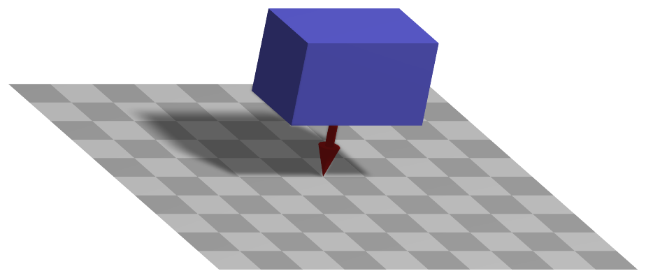

LoadMassProportional
Load attached to MarkerBodyMass marker, applying a 3D vector load (e.g. the vector [0,-g,0] is used to apply gravitational loading of size g in negative y-direction).


Simpler: mbs.CreateMassPoint or mbs.CreateRigidBody add this item, with what it needs, in one call.
Interface
Python names:
LoadMassProportionalorGravity, andVGravityfor its visualizationMarkers it acts on: those providing
BodyMass: MarkerBodyMass
Parameters
The parameters of the item; in a dictionary, its type is ‘MassProportional’:
name |
type |
size |
default |
description |
|---|---|---|---|---|
name |
String |
‘’ |
load’s unique name |
|
markerNumber |
MarkerIndex |
invalid (-1) |
marker’s number to which load is applied |
|
loadVector |
Vector3D |
3 |
[0.,0.,0.] |
(symbol: \(\bv\)) vector-valued load [SI:N/kg = m/s\(^2\)]; typically, this will be the gravity vector in global coordinates; in case of a user function, this v is ignored |
loadVectorUserFunction |
LoadMassProportionalLoadVectorUserFunction |
0 |
(symbol: \(\mathrm{UF} \in \Rcal^3\)) A Python function which defines the time-dependent load; see description below; see also notes on loadFactor and drawing in LoadForceVector! |
|
visualization |
VLoadMassProportional |
parameters for visualization of item |
Visualization parameters
The parameters of VLoadMassProportional, given as visualization:
name |
type |
size |
default |
description |
|---|---|---|---|---|
show |
Bool |
True |
set true, if item is shown in visualization and false if it is not shown |
Drawing
Drawn as all loads.
Detailed description
Load and its frame
The load \(\bv\) = loadVector, or the return value of loadVectorUserFunction, is a force per
mass - an acceleration, \([0,\,-g,\,0]\) for gravity along \(-y\) - given in the global frame. It acts
on every part of the body in proportion to its density \(\rho\), and is not a point force at the
center of mass: on a flexible body it is the distributed body load.
Generalized forces
MarkerBodyMass provides the mass-weighted integral of the position Jacobian of the body, and the
generalized forces are
For a rigid body this is the force \(m\,\LU{0}{\bv}\) at the center of mass. The load factor applies as for a force.
Userfunction: loadVectorUserFunction(mbs, t, loadVector)
A user function, which computes the mass proporitional load vector depending on time and object parameters, which is hereafter applied to object or node.
Example of user function: functionality same as in LoadForceVector
arguments / return |
type or size |
description |
|---|---|---|
|
MainSystem |
provides MainSystem mbs to which load belongs |
|
Real |
current time in mbs |
|
Vector3D |
\(\bv\) copied from object; WARNING: this parameter does not work in combination with static computation, as it is changed by the solver over step time |
return value |
Vector3D |
computed load vector |
Mini example
node = mbs.AddNode(NodePoint(referenceCoordinates = [1,0,0]))
body = mbs.AddObject(MassPoint(nodeNumber = node, mass=2))
mMass = mbs.AddMarker(MarkerBodyMass(bodyNumber=body))
mbs.AddLoad(LoadMassProportional(markerNumber=mMass, loadVector=[0,0,-9.81]))
#assemble and solve system for default parameters
mbs.Assemble()
mbs.SolveDynamic()
#check result
exu.sys['testResult'] = mbs.GetNodeOutput(node, exu.OutputVariableType.Position)[2]
#final z-coordinate of position shall be -g/2 due to constant acceleration with g=-9.81
#result independent of mass
Examples (Ex) and TestModels (TM) that show this item, with weblink to github: basicTutorial2024.py (Ex), tutorialSpringDamperCreate.py (Ex), tutorialRigidBody.py (Ex), tutorialRigidBodyCreate.py (Ex)